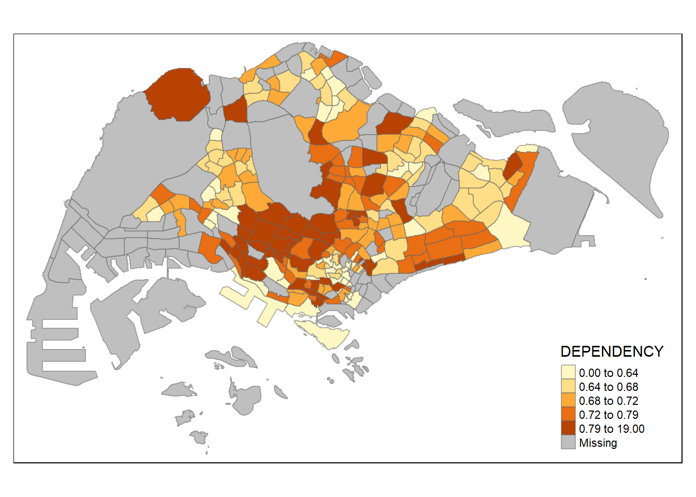

pacman::p_load(sf, tmap, tidyverse)1b: Choropleth Mapping with R
A choropleth map is a type of thematic map in which areas are shaded or patterned in proportion to a statistical variable that represents an aggregate summary of a geographic characteristic within each area, such as population or per-capita income. For example, the spatial distribution of aged population of Singapore could be represented on a choropleth map using the Master Plan 2014 Subzone Boundary. In R, choropleth maps can be plotted using the tmap package.
Getting started
The code chunk below uses p_load() of pacman package to check if the required packages have been installed on the computer. If they are, the packages will be launched.
- sf package is used for importing, managing, and processing geospatial data.
- tmap package is used for thematic mapping.
The data sets used are:
- Master Plan 2014 Subzone Boundary (Web) (last updated Dec 2014) from data.gov.sg retrieved on 17 Nov 2023
- Singapore Residents by Planning Area / Subzone, Age Group, Sex and Type of Dwelling, June 2011-2020 from Department of Statistics retrieved on 17 Nov 2023
Importing Data
Import Geospatial data into R
The code chunk below uses the st_read() function of sf package to import MP14_SUBZONE_WEB_PL shapefile into R as a simple feature data frame called mpsz.
mpsz <- st_read(dsn = "data/geospatial",
layer = "MP14_SUBZONE_WEB_PL")Reading layer `MP14_SUBZONE_WEB_PL' from data source
`C:\magdalenecjw\ISSS624 Geospatial\Hands_on_Exercise\Ex1\data\geospatial'
using driver `ESRI Shapefile'
Simple feature collection with 323 features and 15 fields
Geometry type: MULTIPOLYGON
Dimension: XY
Bounding box: xmin: 2667.538 ymin: 15748.72 xmax: 56396.44 ymax: 50256.33
Projected CRS: SVY21mpszSimple feature collection with 323 features and 15 fields
Geometry type: MULTIPOLYGON
Dimension: XY
Bounding box: xmin: 2667.538 ymin: 15748.72 xmax: 56396.44 ymax: 50256.33
Projected CRS: SVY21
First 10 features:
OBJECTID SUBZONE_NO SUBZONE_N SUBZONE_C CA_IND PLN_AREA_N
1 1 1 MARINA SOUTH MSSZ01 Y MARINA SOUTH
2 2 1 PEARL'S HILL OTSZ01 Y OUTRAM
3 3 3 BOAT QUAY SRSZ03 Y SINGAPORE RIVER
4 4 8 HENDERSON HILL BMSZ08 N BUKIT MERAH
5 5 3 REDHILL BMSZ03 N BUKIT MERAH
6 6 7 ALEXANDRA HILL BMSZ07 N BUKIT MERAH
7 7 9 BUKIT HO SWEE BMSZ09 N BUKIT MERAH
8 8 2 CLARKE QUAY SRSZ02 Y SINGAPORE RIVER
9 9 13 PASIR PANJANG 1 QTSZ13 N QUEENSTOWN
10 10 7 QUEENSWAY QTSZ07 N QUEENSTOWN
PLN_AREA_C REGION_N REGION_C INC_CRC FMEL_UPD_D X_ADDR
1 MS CENTRAL REGION CR 5ED7EB253F99252E 2014-12-05 31595.84
2 OT CENTRAL REGION CR 8C7149B9EB32EEFC 2014-12-05 28679.06
3 SR CENTRAL REGION CR C35FEFF02B13E0E5 2014-12-05 29654.96
4 BM CENTRAL REGION CR 3775D82C5DDBEFBD 2014-12-05 26782.83
5 BM CENTRAL REGION CR 85D9ABEF0A40678F 2014-12-05 26201.96
6 BM CENTRAL REGION CR 9D286521EF5E3B59 2014-12-05 25358.82
7 BM CENTRAL REGION CR 7839A8577144EFE2 2014-12-05 27680.06
8 SR CENTRAL REGION CR 48661DC0FBA09F7A 2014-12-05 29253.21
9 QT CENTRAL REGION CR 1F721290C421BFAB 2014-12-05 22077.34
10 QT CENTRAL REGION CR 3580D2AFFBEE914C 2014-12-05 24168.31
Y_ADDR SHAPE_Leng SHAPE_Area geometry
1 29220.19 5267.381 1630379.3 MULTIPOLYGON (((31495.56 30...
2 29782.05 3506.107 559816.2 MULTIPOLYGON (((29092.28 30...
3 29974.66 1740.926 160807.5 MULTIPOLYGON (((29932.33 29...
4 29933.77 3313.625 595428.9 MULTIPOLYGON (((27131.28 30...
5 30005.70 2825.594 387429.4 MULTIPOLYGON (((26451.03 30...
6 29991.38 4428.913 1030378.8 MULTIPOLYGON (((25899.7 297...
7 30230.86 3275.312 551732.0 MULTIPOLYGON (((27746.95 30...
8 30222.86 2208.619 290184.7 MULTIPOLYGON (((29351.26 29...
9 29893.78 6571.323 1084792.3 MULTIPOLYGON (((20996.49 30...
10 30104.18 3454.239 631644.3 MULTIPOLYGON (((24472.11 29...Calling the
mpszsimple feature data frame will only display the first 10 rows. This makes it much easier to work with large data and prevents R from attempting to display every row of a data frame.
Import Attribute data into R
The code chunk below uses the read_csv() function of readr package to import respopagesextod2011to2020.csv file into R and save it as a R dataframe called popdata.
popdata <- read_csv("data/aspatial/respopagesextod2011to2020.csv")Data Preparation
Before a thematic map can be prepared, popdata is converted into a data table with year 2020 values and includes the following variables:
YOUNG: age group 0 to 4 until age groyup 20 to 24,ECONOMY ACTIVE: age group 25-29 until age group 60-64,AGED: age group 65 and above,TOTAL: all age group, andDEPENDENCY: the ratio between young and aged against economy active group.
The following data wrangling and transformation functions are used: pivot_wider() of tidyr package, and mutate(), filter(), group_by() and select() of dplyr package.
popdata2020 <- popdata %>%
filter(Time == 2020) %>%
group_by(PA, SZ, AG) %>%
summarise(`POP` = sum(`Pop`)) %>%
ungroup()%>%
pivot_wider(names_from=AG, values_from=POP) %>%
mutate(YOUNG = rowSums(.[3:6])+rowSums(.[12])) %>%
mutate(`ECONOMY ACTIVE` = rowSums(.[7:11])+rowSums(.[13:15]))%>%
mutate(`AGED`=rowSums(.[16:21])) %>%
mutate(`TOTAL`=rowSums(.[3:21])) %>%
mutate(`DEPENDENCY` = (`YOUNG` + `AGED`)/`ECONOMY ACTIVE`) %>%
select(`PA`, `SZ`, `YOUNG`, `ECONOMY ACTIVE`, `AGED`, `TOTAL`, `DEPENDENCY`)Joining Attribute and Geospatial data
Before performing the georelational join, an extra step is required to convert the values in PA and SZ fields to uppercase as the values of PA and SZ fields consist of upper and lowercase while the SUBZONE_N and PLN_AREA_N columns are entirely in uppercase.
popdata2020 <- popdata2020 %>%
mutate(across(where(is.character), toupper)) %>%
filter(`ECONOMY ACTIVE` > 0)Next, left_join() of dplyr is used to join the geographical data and attribute table using Planning Subzone name i.e. SUBZONE_N and SZ as the common identifier.
mpsz_pop2020 <- left_join(mpsz, popdata2020,
by = c("SUBZONE_N" = "SZ"))write_rds(mpsz_pop2020, "data/rds/mpszpop2020.rds")Choropleth Mapping Geospatial Data Using tmap
Two approaches can be used to prepare thematic maps using the tmap package:
- Plotting a thematic map quickly by using
qtm(). - Plotting a highly customisable thematic map by using tmap elements.
Plotting a choropleth map quickly by using qtm()
qtm() is the easiest and quickest to draw a choropleth map using tmap as it is concise and provides a good default visualisation in many cases. The code chunk below will draw a cartographic standard choropleth map as shown below.
tmap_mode()withplotoption produces a static map. For interactive mode,viewoption should be used.
fillargument is used to map the attribute of interest.
tmap_mode("plot")
qtm(mpsz_pop2020,
fill = "DEPENDENCY")
However, when using
qtm(), aesthetics of individual layers are harder to control. To draw a high quality cartographic choropleth map, tmap drawing elements should be used.
Drawing Base Map using tmap elements
The basic building block of tmap is tm_shape() followed by one or more layer elements such as tm_fill() and tm_polygons(). In the code chunk below, tm_shape() is used to define the input data (i.e mpsz_pop2020) and tm_polygons() is used to draw the Planning Subzone polygons.
To draw a choropleth map showing the geographical distribution of a selected variable by Planning Subzone, assign the target variable such as Dependency to tm_polygons().
The default interval binning used to draw the choropleth map is
pretty. tmap provides a total ten data classification methods, namely: fixed, sd, equal, pretty (default), quantile, kmeans, hclust, bclust, fisher, and jenks.
By default, missing values will be shaded in grey.
tm_shape(mpsz_pop2020) +
tm_polygons("DEPENDENCY")
Drawing a choropleth map using tm_fill() and tm_border()
tm_polygons() is a wrapper of tm_fill() and tm_border(). tm_fill() shades the polygons using the default colour scheme and tm_borders() adds the borders of the shapefile onto the choropleth map.
The code chunk below draws a choropleth map by using tm_fill() alone, and the Planning Subzones are shaded according to the respective DEPENDENCY values.
tm_shape(mpsz_pop2020)+
tm_fill("DEPENDENCY")
tm_borders() adds light grey borders on the boundary of the Planning Subzones.
The
alphaargument is used to define transparency number between 0 (totally transparent) and 1 (not transparent). By default, thealphavalue of the col is used (normally 1). Other arguments that can be specified includecol= border colour,lwd= border line width (default = 1), andlty= border line type (default = ‘solid’).
tm_shape(mpsz_pop2020)+
tm_fill("DEPENDENCY") +
tm_borders(lwd = 0.1, alpha = 1)
Data Classification Methods of tmap
Choropleth maps can be either classified or unclassified:
- Classed choropleth maps: The point of classification is to take a large number of observations and group them into data ranges or classes. To define a data classification method, use the
styleargument oftm_fill()ortm_polygons(). - Unclassed choropleth maps: Similar to classed choropleth maps but they do not have an averaged statistic towards each particular colour.
There are many methods of choosing classes and could be based on the nature of distribution (e.g. quantile, equal interval, natural breaks) or arbitrary (e.g. fixed round numbers, census housing categories).
tm_shape(mpsz_pop2020)+
tm_fill("DEPENDENCY",
n = 5,
style = "equal") +
tm_borders(alpha = 0.5)
The
equalstyle divides the attribute values into equally sized classes. In variables with a skewed distribution or there are a couple of very large outliers, the resulting map is likely to end up with empty classes with little colour diversity.
tm_shape(mpsz_pop2020)+
tm_fill("DEPENDENCY",
n = 5,
style = "sd") +
tm_borders(alpha = 0.5)
The
sdstyle calculates a standard deviation of a given variable, and next use this value as the break width. It is a measure of dispersion and suitable for use if the distribution approximates a normal distribution.
tm_shape(mpsz_pop2020)+
tm_fill("DEPENDENCY",
n = 5,
style = "quantile") +
tm_borders(alpha = 0.5)
The
quantilestyle creates breaks with the same number of features per class.
tm_shape(mpsz_pop2020)+
tm_fill("DEPENDENCY",
n = 5,
style = "jenks") +
tm_borders(alpha = 0.5)
The Jenks optimization method, also called the Jenks natural breaks classification method, is a data clustering method designed to determine the best arrangement of values into different classes. This is done by seeking to minimize each class’s average deviation from the class mean, while maximizing each class’s deviation from the means of the other classes. In other words, the method seeks to reduce the variance within classes and maximize the variance between classes.
tm_shape(mpsz_pop2020)+
tm_fill("DEPENDENCY",
n = 5,
style = "kmeans") +
tm_borders(alpha = 0.5)
Classification by KMeans Clustering is somewhat similar to natural breaks (Jenks), except that KMeans looks for centres of clusters of features with similar attribute values rather than looking for breaks between feature attribute values.
tm_shape(mpsz_pop2020)+
tm_fill("DEPENDENCY",
n = 5,
style = "fisher") +
tm_borders(alpha = 0.5)
The
fisherstyle creates groups with maximalized homogeneity.
Warning
In this example, the distribution of equal data classification method is substantially less evenly distributed than the quantile data classification method. The distribution of the variable and the objectives of the analysis are important factors that should be considered when deciding on the data classification method to use.
tm_shape(mpsz_pop2020)+
tm_fill("DEPENDENCY",
n = 2,
style = "equal") +
tm_borders(alpha = 0.5)
tm_shape(mpsz_pop2020)+
tm_fill("DEPENDENCY",
n = 6,
style = "equal") +
tm_borders(alpha = 0.5)
tm_shape(mpsz_pop2020)+
tm_fill("DEPENDENCY",
n = 10,
style = "equal") +
tm_borders(alpha = 0.5)
tm_shape(mpsz_pop2020)+
tm_fill("DEPENDENCY",
n = 20,
style = "equal") +
tm_borders(alpha = 0.5)
tm_shape(mpsz_pop2020)+
tm_fill("DEPENDENCY",
n = 2,
style = "quantile") +
tm_borders(alpha = 0.5)
tm_shape(mpsz_pop2020)+
tm_fill("DEPENDENCY",
n = 6,
style = "quantile") +
tm_borders(alpha = 0.5)
tm_shape(mpsz_pop2020)+
tm_fill("DEPENDENCY",
n = 10,
style = "quantile") +
tm_borders(alpha = 0.5)
tm_shape(mpsz_pop2020)+
tm_fill("DEPENDENCY",
n = 20,
style = "quantile") +
tm_borders(alpha = 0.5)Increasing the number of classes may not always be beneficial for the analysis: In the
equaldata classification method, the additional classes added more colours to the legend without meaningful impact on the map. Forquantiledata classification method, the additional number of classes appeared to be useful up until around n=10 – beyond that, again, the additional colours did not value-add to the map.
Plotting choropleth map with custom breaks (Fixed Data Classification)
For all the built-in styles, the category breaks are computed internally. In order to override these defaults, the breakpoints can be set explicitly by means of the breaks argument to the tm_fill().
In tmap, the breaks include a minimum and maximum. Hence, for n categories, n+1 elements must be specified in the breaks option in increasing order.
Descriptive statistics on the variable can be used to guide the setting of the break points.
summary(mpsz_pop2020$DEPENDENCY) Min. 1st Qu. Median Mean 3rd Qu. Max. NA's
0.0000 0.6519 0.7025 0.7742 0.7645 19.0000 92 With reference to the results above, we set break point at 0.60, 0.65, 0.70, 0.75 and 0.80. In addition, we also need to include a minimum and maximum, which we set at 0 and 100. Hence, we set the breaks vector as c(0, 0.60, 0.65, 0.70, 0.75, 0.80, 1.00).
tm_shape(mpsz_pop2020)+
tm_fill("DEPENDENCY",
breaks = c(0, 0.60, 0.65, 0.70, 0.75, 0.80, 1.00)) +
tm_borders(alpha = 0.5)Colour Scheme
tmap supports colour ramps either defined by the user or a set of predefined colour ramps from the RColorBrewer package. To change the colour, assign the preferred colour to palette argument of tm_fill() as shown in the code chunk below.
tm_shape(mpsz_pop2020)+
tm_fill("DEPENDENCY",
n = 6,
style = "jenks",
palette = "Blues") +
tm_borders(alpha = 0.5)To reverse the colour shading, add a “-” prefix.
tm_shape(mpsz_pop2020)+
tm_fill("DEPENDENCY",
n = 6,
style = "jenks",
palette = "-Blues") +
tm_borders(alpha = 0.5)Map Layouts
Map layout refers to the combination of all map elements into a cohensive map. Map elements include among others the objects to be mapped, the title, the scale bar, the compass, margins and aspects ratios. Colour settings and data classification methods covered in the previous section relate to the palette and break-points are used to affect how the map looks. In tmap, several legend options are provided to change the placement, format and appearance of the legend.
tm_shape(mpsz_pop2020)+
tm_fill("DEPENDENCY",
style = "jenks",
palette = "Blues",
legend.hist = TRUE,
legend.is.portrait = TRUE,
legend.hist.z = 0.1) +
tm_layout(main.title = "Distribution of Dependency Ratio by planning subzone \n(Jenks classification)",
main.title.position = "center",
main.title.size = 1,
legend.height = 0.45,
legend.width = 0.35,
legend.outside = FALSE,
legend.position = c("right", "bottom"),
frame = FALSE) +
tm_borders(alpha = 0.5)
tmap allows a wide variety of layout settings to be changed. They can be called by using tmap_style(). The code chunk below uses the classic style.
Other available styles are: “white”, “gray”, “natural”, “cobalt”, “col_blind”, “albatross”, “beaver”, “bw”, “watercolor”.
To reset to the default style use
tmap_style("white").
tm_shape(mpsz_pop2020)+
tm_fill("DEPENDENCY",
style = "quantile",
palette = "-Greens") +
tm_borders(alpha = 0.5) +
tmap_style("classic")
Beside map style, tmap also also provides arguments to draw other map furniture such as compass using tm_compass(), scale bar using tm_scale_bar() and grid lines using tm_grid().
tm_shape(mpsz_pop2020)+
tm_fill("DEPENDENCY",
style = "quantile",
palette = "Blues",
title = "No. of persons") +
tm_layout(main.title = "Distribution of Dependency Ratio \nby planning subzone",
main.title.position = "center",
main.title.size = 1.2,
legend.height = 0.45,
legend.width = 0.35,
frame = TRUE) +
tm_borders(alpha = 0.5) +
tm_compass(type="8star", size = 2) +
tm_scale_bar(width = 0.15) +
tm_grid(lwd = 0.1, alpha = 0.2) +
tm_credits("Source: Planning Subzone boundary from Urban Redevelopment Authorithy (URA)
and Population data from Department of Statistics DOS",
position = c("left", "bottom"))Small Multiple Choropleth Maps (Facet Choropleth Maps)
Small multiple maps, also referred to as facet maps, are composed of many maps arrange side-by-side, and sometimes stacked vertically. Small multiple maps enable the visualisation of how spatial relationships change with respect to another variable, such as time.
In tmap, small multiple maps can be plotted in three ways:
- by assigning multiple values to at least one of the aesthetic arguments,
- by defining a group-by variable in
tm_facets(), and - by creating multiple stand-alone maps with
tmap_arrange().
Small multiple choropleth maps can be created by defining ncols in tm_fill().
tm_shape(mpsz_pop2020)+
tm_fill(c("YOUNG", "AGED"),
style = "equal",
palette = "Blues") +
tm_layout(legend.position = c("right", "bottom")) +
tm_borders(alpha = 0.5) +
tmap_style("white")
It is also possible to assign multiple values to at least one of the aesthetic arguments.
tm_shape(mpsz_pop2020)+
tm_polygons(c("DEPENDENCY","AGED"),
style = c("equal", "quantile"),
palette = list("Blues","Purples")) +
tm_layout(legend.position = c("right", "bottom"))Small multiple choropleth maps can be created by using tm_facets().
tm_shape(mpsz_pop2020) +
tm_fill("DEPENDENCY",
style = "quantile",
palette = "Blues",
thres.poly = 0) +
tm_facets(by="REGION_N",
free.coords=TRUE,
drop.shapes=TRUE) +
tm_layout(legend.show = FALSE,
title.position = c("center", "center"),
title.size = 20) +
tm_borders(alpha = 0.5)
Small multiple choropleth maps can be created by creating multiple stand-alone maps with tmap_arrange().
youngmap <- tm_shape(mpsz_pop2020)+
tm_polygons("YOUNG",
style = "quantile",
palette = "Blues")
agedmap <- tm_shape(mpsz_pop2020)+
tm_polygons("AGED",
style = "quantile",
palette = "Blues")
tmap_arrange(youngmap, agedmap, asp=1, ncol=2)
Mappping Spatial Object Meeting a Selection Criterion
Instead of creating small multiple choropleth map, it is also possible to use selection function to map spatial objects meeting the selection criterion.
tm_shape(mpsz_pop2020[mpsz_pop2020$REGION_N=="CENTRAL REGION", ])+
tm_fill("DEPENDENCY",
style = "quantile",
palette = "Blues",
legend.hist = TRUE,
legend.is.portrait = TRUE,
legend.hist.z = 0.1) +
tm_layout(legend.outside = TRUE,
legend.height = 0.45,
legend.width = 5.0,
legend.position = c("right", "bottom"),
frame = FALSE) +
tm_borders(alpha = 0.5)